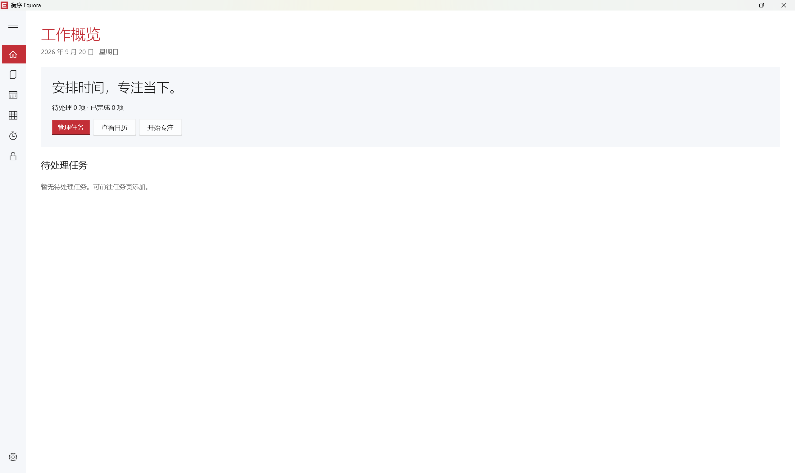
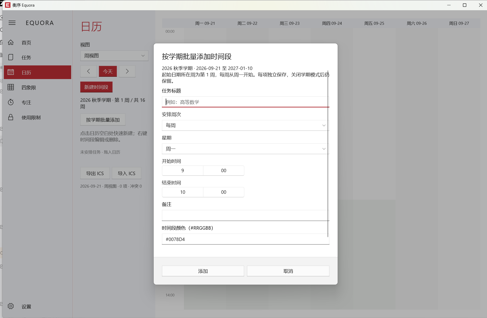
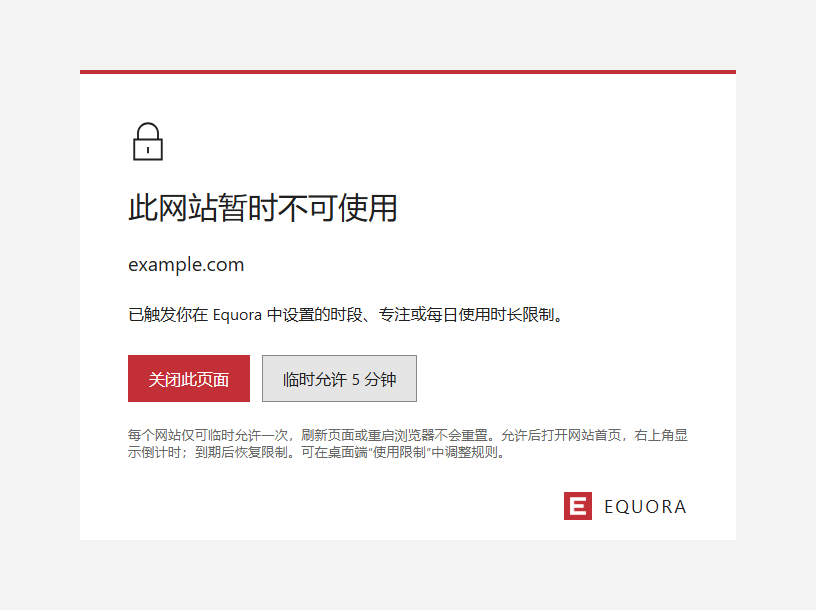
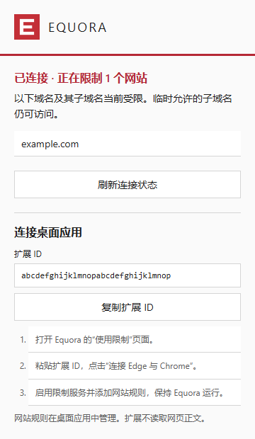

任务，各就其位。
用项目与标签整理工作，用智能清单找到当下重点。任务详情、检查项与截止时间，同屏掌握。

清单、日历、四象限与专注，
共享同一份任务数据。
减少来回切换，把精力留给真正重要的事。
用项目与标签整理工作，用智能清单找到当下重点。任务详情、检查项与截止时间，同屏掌握。
在周视图中拖拽安排时间块，及时识别日程冲突。导入的 ICS 日程也可在日历中编辑或删除。
用重要与紧急四象限审视任务，拖拽调整优先级。结合今日要事与容量提示，为重点保留空间。
选择番茄钟、深度工作或正计时，配合应用与网站限制减少打扰。随手记录分心想法，随后回到手头工作。
从一个想法开始，到一次扎实的复盘。
把规划、执行与调整串在一起。
按下 Ctrl + Shift + Space，快速记录任务。支持中文日期、时长、标签与优先级解析，确认后保存。
在四象限中厘清轻重缓急，再把任务放进日历。智能规划帮助寻找空闲时间，提供任务拆分建议。
开始专注，减少干扰。通过每日与每周报告对比计划和实际，逐渐找到适合自己的工作节奏。

开启学期模式，填写学期名与起止日期：起始周即第 1 周。按每周或指定周次安排时间，可选择是否同时创建任务；时间段拥有独立标题，右键即可跨周批量编辑或删除。学期结束自动归档，保留以往安排，再开始新学期。
阅读 v1.0.0 正式版说明


网站与本地应用触发限制时显示封锁页，每个目标可临时允许 5 分钟。专注时的分心提醒显示在应用窗口顶部；有每日额度的网站和应用在右上角显示剩余时间，最后 10 分钟按秒倒计时。
查看完整设置指南任务、时间块与专注记录默认存储在自己的设备上。核心功能无需注册账号，也不依赖网络连接。设置中可经三次确认重置本机数据，并保留恢复副本。
需要多设备协作时，可以自行部署同步服务器。同步默认关闭，启用后仅与你配置的服务器通信。
支持临时允许与一键暂停，并为关键系统进程保留白名单。让工具辅助你的判断，让工作保持可控。
v1.0.2 正式版现已上线。ICS 日程可编辑，应用与网站额度随时可见。
目前提供 Windows x64 桌面版，支持 Windows 10（19041 或更高版本）和 Windows 11。EXE 与 MSIX 安装包均包含所需 .NET 运行时。
不需要。安装后即可使用任务、日历、四象限与专注等核心功能，数据默认存储在本地。多设备同步是可选的自托管功能。
需要加载发行版提供的 Edge / Chrome 扩展，并按应用内「使用限制」页面的指引连接。查看完整设置指南 ↗
每个版本的改动都收录在帮助中心的发布说明，安装包可在 GitHub Releases 下载，问题和建议请提交到 GitHub Issues。